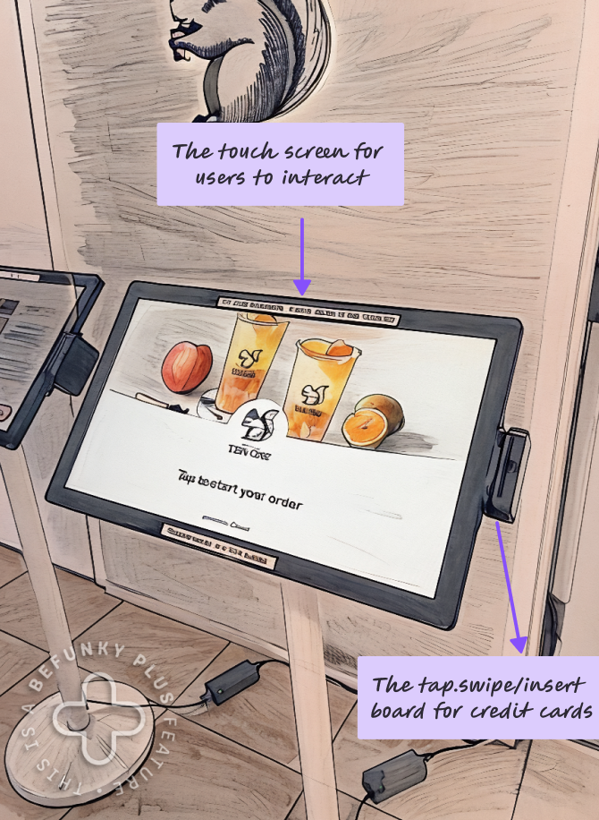
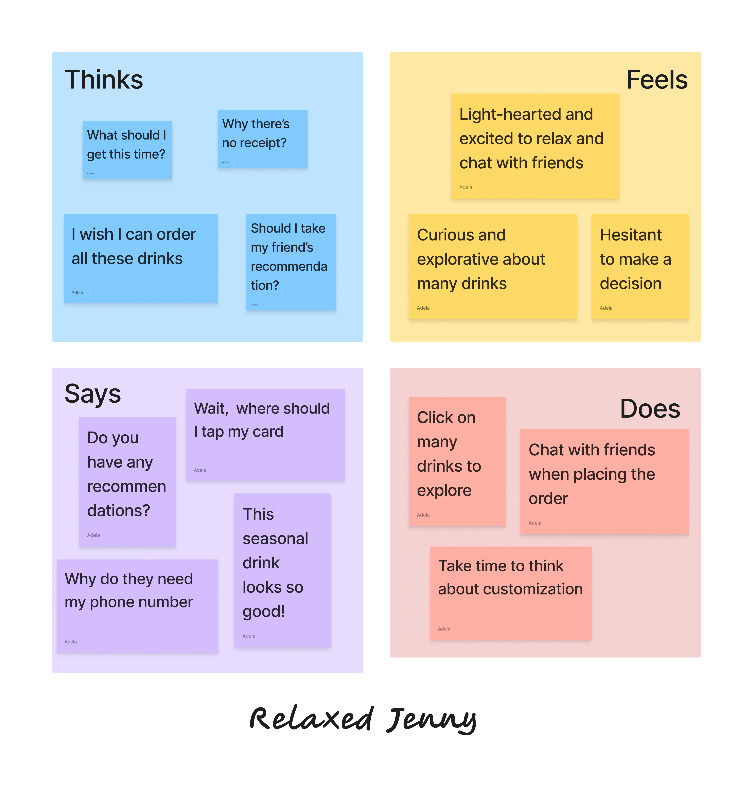
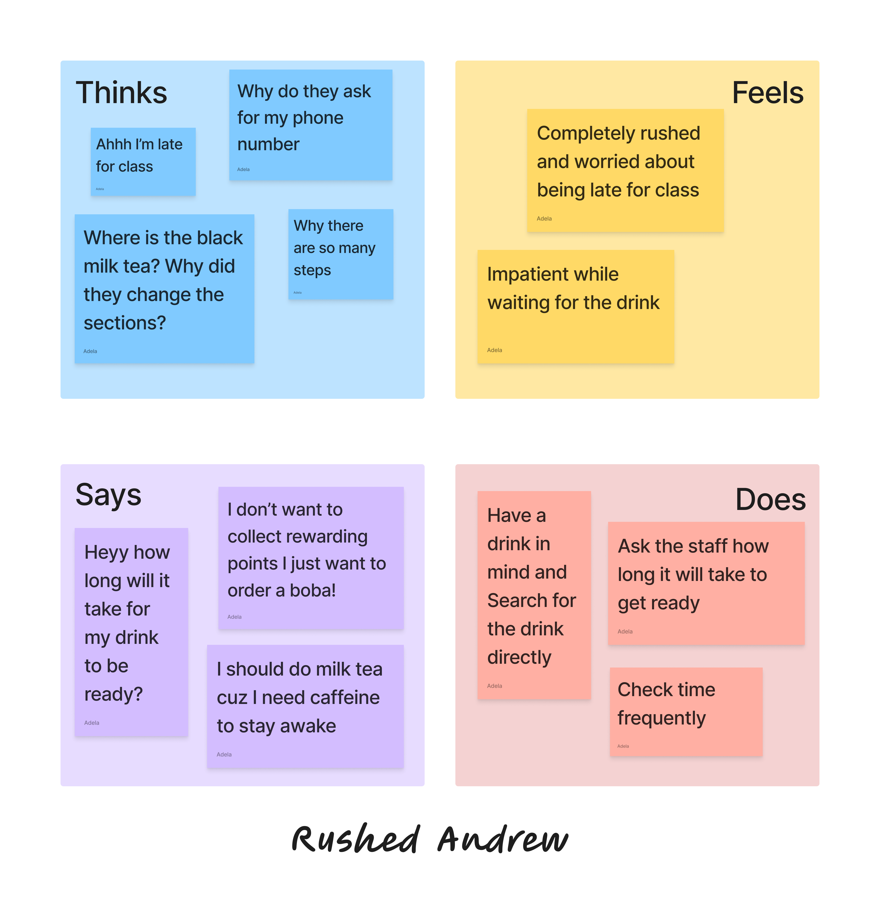

Context
Everyone has interacted with products with exceptionally good design: like a ramen bowl with a built-in hole for chopsticks, a chair that provides excellent back support, or a self-ordering kiosk that makes the ordering process seamless. Have you ever wondered how the designers behind these products, despite never meeting you as a user, created something that feels so intuitive to interact with?
Well, even though they haven't met you in person, they conducted extensive user experience research through interviewing users, creating personas, and analyzing interactions. They have a deep understanding of your needs without ever meeting you.
In this case study, we will conduct similar user persona research to gain an in-depth understanding of how users interact with self-ordering kiosks in a bubble tea shop. We first interviewed three users and summrized key findings. Then based on the interviews, we created two personas that capture broadly two different types of user behaviors. Finally, we developed a storyboard.
Part I: Interface
The self-ordering kiosk helps customers order drinks so that the staff can focus on making drinks. It allows customers to browse the menu, customize their drinks, and pay for their orders. There are in total two kiosks in the shop. They are located along the way to the counter, so customers can place their orders first and then wait at the counter.

Part II: Observation and Interview
Observation
We visited the bubble tea shop during a busy hour (3 PM on a Friday), and two lines naturally formed in front of the kiosks. There were two large illuminated boards on the left side of the line displaying the menu and pictures of the top nine most popular drinks. While waiting in line, some customers looked at the board to decide what to order and discussed their choices with friends, while others simply browsed their phones. The following observations were noted.
-
Who They Order With: Users who were with friends usually looked at the kiosk together, while individual customers used it alone.
-
Step 1: Enter Mobile Number: The first step prompted users to enter their phone number. While most people entered their number, a few chose to skip this step.
-
Step 2: Choose the Drink: The second step involved browsing the menu. Two different ordering behaviors were observed. Users who already knew what they wanted used the navigation bar on the left to quickly find their desired section. Users who were still deciding typically scrolled through the menu from top to bottom.
-
Step 3: Customize the Drink: Despite some predetermined drink options, most bubble tea drinks were highly customizable. Users could adjust sugar levels, ice levels, boba types, and more.
-
Step 4: Pay for the Order: Once customers had finished ordering, they were shown a preview of their order and had the option to remove or add drinks. After confirming their order, they proceeded to payment.
-
Step 5: Enter Name and Receive Order Number: Users then entered their name and received an order number.
Interview
We conducted interviews with three users to gather more insights into their ordering experiences. The following are key findings from the interviews:
-
First Impression: All users were returning customers and found the interface intuitive with a simple design.
-
Pain Points:
- Discomfort with providing phone numbers upfront
- Confusion about varying levels of customization
- Uncertainty about how to collect drinks and whether to keep order numbers
- Difficulty locating the card reader
-
Positive Aspects:
- Clear navigation bar with different sections
- Helpful pictures of drinks
- Detailed descriptions of drinks
- Quick response time and smooth flow
-
Preferences: Most users preferred using the kiosk over ordering in person as it removed pressure and allowed them to take their time.
Part III: Personas
Now that we have in-depth understanding of the users' behavior and preferences when interacting with the kiosk, we can create two personas based on the observations and interviews.
Relaxed Jenny
Relaxed Jenny is a sophomore in college. It's a sunny Friday afternoon, and her friends suggest they hang out at a bubble tea shop.
Interface Problems:
- She felt uncomfortable entering her phone number but proceeded to do so.
- She experienced information overload, as each drink had very detailed descriptions, making it difficult for her to decide.
- It took her some time to locate the card reader when she was ready to pay.
Why Relaxed Jenny Represents Users:
- Like Jenny, many users visit the boba shop in a lighthearted mood, looking to spend time with friends.
- They don't have a go-to drink and usually take their time exploring all the available options.
- Many of these users, especially first-time visitors, don't use the kiosk frequently and feel uncertain about various aspects of the interface.

Rushed Andrew
Rushed Andrew is a senior in college. He just finished lunch at the dining hall and decided to grab a milk tea before his 1 PM class because he stayed up until 2 AM last night working on his homework.
Interface Problems:
- As Andrew is short on time, he feels frustrated by the many steps required to place an order.
- Since the boba tea shop occasionally changes the order of drinks on the menu, it was difficult for Andrew to quickly find the drink he had in mind.
Why Rushed Andrew Represents Users:
- Like Andrew, many users visit the boba shop when they are in a hurry, often between classes or meetings.
- They typically have a specific drink in mind and just want a fast, efficient ordering process.
- For these users, excessive steps and required inputs create friction, making the kiosk feel slow and inconvenient.

Part IV: Storyboard
Now we choose Relaxed Jenny as our persona, and create a storyboard to illustrate the user interaction with the kiosk.
Conclusion
Through this user persona research, I gained valuable insights into how different types of users interact with the bubble tea kiosk. By creating detailed personas like Relaxed Jenny and Rushed Andrew, I can better understand user needs and pain points, helping me design more intuitive interfaces that cater to various user behaviors.